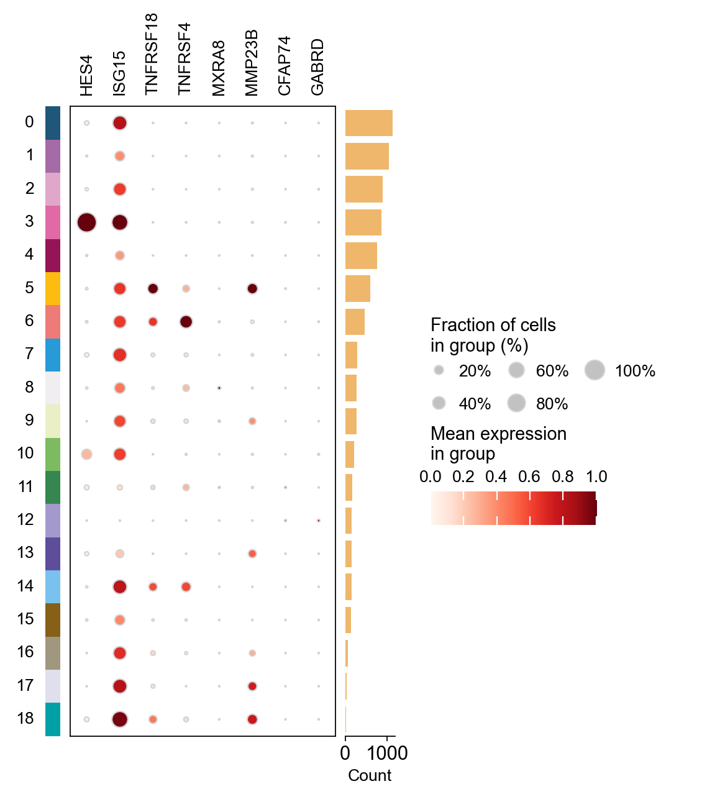
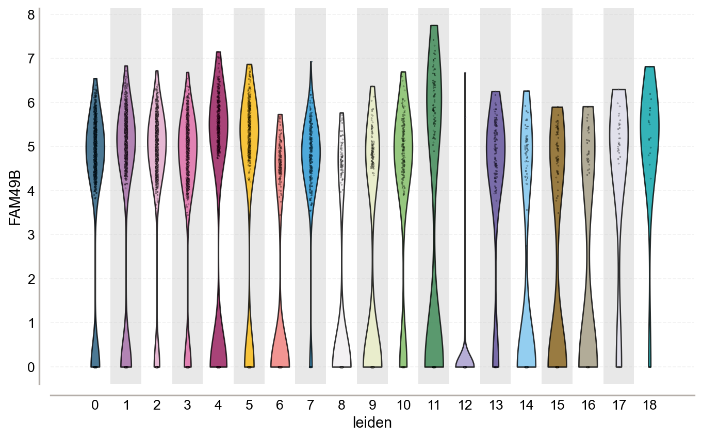
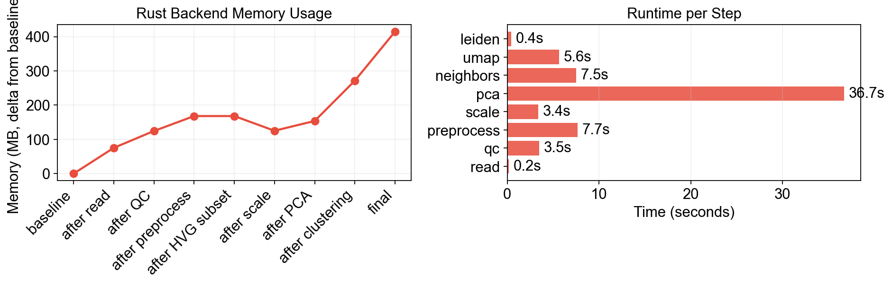

Preprocessing the data of scRNA-seq [Rust / out-of-memory]#
This tutorial demonstrates omicverse’s Rust-backed out-of-memory path (AnnDataOOM) for preprocessing scRNA-seq without loading the full expression matrix into memory.
The expression matrix stays on disk (HDF5, via the anndataoom package, which wraps scverse/anndata-rs). All operations — QC, normalization, HVG selection, scaling, PCA — use chunked iteration or lazy transforms.
Install:
pip install omicverse[rust]
# or just the backend
pip install anndataoom
import omicverse as ov
import numpy as np
import pandas as pd
import matplotlib.pyplot as plt
import psutil, os, time, gc
ov.plot_set()
process = psutil.Process(os.getpid())
def mem_mb():
gc.collect()
return process.memory_info().rss / 1024**2
mem_log = []
time_log = {}
def snap(label):
m = mem_mb()
mem_log.append({'step': label, 'mem_mb': m})
print(f" [{label}] RSS = {m:.0f} MB")
🔬 Starting plot initialization...
🧬 Detecting GPU devices…
✅ NVIDIA CUDA GPUs detected: 1
• [CUDA 0] NVIDIA H100 80GB HBM3
Memory: 79.1 GB | Compute: 9.0
____ _ _ __
/ __ \____ ___ (_)___| | / /__ _____________
/ / / / __ `__ \/ / ___/ | / / _ \/ ___/ ___/ _ \
/ /_/ / / / / / / / /__ | |/ / __/ / (__ ) __/
\____/_/ /_/ /_/_/\___/ |___/\___/_/ /____/\___/
🔖 Version: 2.1.2rc1 📚 Tutorials: https://omicverse.readthedocs.io/
✅ plot_set complete.
1. Download PBMC 8k dataset#
We’ll use the PBMC 8k dataset from 10x Genomics (7750 cells × 20939 genes).
h5ad_path = './data/pbmc8k.h5ad'
if not os.path.exists(h5ad_path):
print('Downloading PBMC 8k...')
os.makedirs('./data', exist_ok=True)
adata_init = ov.datasets.pbmc8k()
adata_init.write(h5ad_path)
print(f'Saved to {h5ad_path} ({os.path.getsize(h5ad_path)/1024/1024:.1f} MB)')
del adata_init
gc.collect()
else:
print(f'Dataset already exists: {h5ad_path}')
Dataset already exists: ./data/pbmc8k.h5ad
2. Read with Rust backend#
ov.read(path, backend='rust') returns AnnDataOOM — expression matrix stays on disk.
snap('baseline')
t0 = time.time()
adata = ov.read(h5ad_path, backend='rust')
time_log['read'] = time.time() - t0
snap('after read')
print(adata)
[baseline] RSS = 645 MB
📂 Reading with anndata-rs (Rust · out-of-memory)
./data/pbmc8k.h5ad (39.5 MB)
✓ Loaded in 0.15s
💡 Data stays on disk. Use ov.pp.* for chunked processing.
adata.close() when done · adata.to_adata() to materialise
[after read] RSS = 720 MB
╭────────────────────────────────────────────────────────────────────────╮
│ AnnDataOOM Rust · out-of-memory · backed │
├────────────────────────────────────────────────────────────────────────┤
│ │
│ 7,750 × 20,939 │
│ obs vars │
│ │
│ csr_matrix · float32 · 9.9% density · ~15.8 MB/chunk (1,000 rows) · │
│ pbmc8k.h5ad │
│ │
├────────────────────────────────────────────────────────────────────────┤
│ ▸ obs (21) kit · tissue_ontology_term_id · tissue_type +18 │
│ ▸ var (6) gene_name · feature_name · feature_reference +3 │
│ ▸ obsm (3) UMAP · X_pca · X_umap │
│ ▸ varm (–) │
│ ▸ obsp (–) │
│ ▸ varp (–) │
│ ▸ layers (–) │
│ ▸ raw (–) │
╰────────────────────────────────────────────────────────────────────────╯
AnnDataOOM API compatibility test#
# Properties
print(f"shape: {adata.shape}")
print(f"n_obs: {adata.n_obs}")
print(f"n_vars: {adata.n_vars}")
print(f"is_view: {adata.is_view}")
print(f"isbacked: {adata.isbacked}")
print(f"obs_keys: {adata.obs_keys()[:5]}...")
print(f"var_keys: {adata.var_keys()[:3]}...")
shape: (7750, 20939)
n_obs: 7750
n_vars: 20939
is_view: False
isbacked: True
obs_keys: ['kit', 'tissue_ontology_term_id', 'tissue_type', 'assay_ontology_term_id', 'disease_ontology_term_id']...
var_keys: ['gene_name', 'feature_name', 'feature_reference']...
# obs / var are pandas DataFrames
adata.obs.head()
kit tissue_ontology_term_id tissue_type \
obs_names
TGAGCCGTCGATAGAA-1_10X_5-rep1 10X_5-rep1 UBERON:0000178 tissue
TACACGACAGGACGTA-1_10X_5-rep1 10X_5-rep1 UBERON:0000178 tissue
GAAGCAGCAGCTGTGC-1_10X_5-rep1 10X_5-rep1 UBERON:0000178 tissue
CTCACACAGAGCCCAA-1_10X_5-rep1 10X_5-rep1 UBERON:0000178 tissue
CTCGTCAGTGATAAAC-1_10X_5-rep1 10X_5-rep1 UBERON:0000178 tissue
assay_ontology_term_id disease_ontology_term_id \
obs_names
TGAGCCGTCGATAGAA-1_10X_5-rep1 EFO:0009900 PATO:0000461
TACACGACAGGACGTA-1_10X_5-rep1 EFO:0009900 PATO:0000461
GAAGCAGCAGCTGTGC-1_10X_5-rep1 EFO:0009900 PATO:0000461
CTCACACAGAGCCCAA-1_10X_5-rep1 EFO:0009900 PATO:0000461
CTCGTCAGTGATAAAC-1_10X_5-rep1 EFO:0009900 PATO:0000461
cell_type_ontology_term_id \
obs_names
TGAGCCGTCGATAGAA-1_10X_5-rep1 CL:0001054
TACACGACAGGACGTA-1_10X_5-rep1 CL:0001054
GAAGCAGCAGCTGTGC-1_10X_5-rep1 CL:0001054
CTCACACAGAGCCCAA-1_10X_5-rep1 CL:0000624
CTCGTCAGTGATAAAC-1_10X_5-rep1 CL:0001054
self_reported_ethnicity_ontology_term_id \
obs_names
TGAGCCGTCGATAGAA-1_10X_5-rep1 unknown
TACACGACAGGACGTA-1_10X_5-rep1 unknown
GAAGCAGCAGCTGTGC-1_10X_5-rep1 unknown
CTCACACAGAGCCCAA-1_10X_5-rep1 unknown
CTCGTCAGTGATAAAC-1_10X_5-rep1 unknown
development_stage_ontology_term_id \
obs_names
TGAGCCGTCGATAGAA-1_10X_5-rep1 HsapDv:0000136
TACACGACAGGACGTA-1_10X_5-rep1 HsapDv:0000136
GAAGCAGCAGCTGTGC-1_10X_5-rep1 HsapDv:0000136
CTCACACAGAGCCCAA-1_10X_5-rep1 HsapDv:0000136
CTCGTCAGTGATAAAC-1_10X_5-rep1 HsapDv:0000136
sex_ontology_term_id donor_id ... \
obs_names ...
TGAGCCGTCGATAGAA-1_10X_5-rep1 PATO:0000384 RG1237 ...
TACACGACAGGACGTA-1_10X_5-rep1 PATO:0000384 RG1237 ...
GAAGCAGCAGCTGTGC-1_10X_5-rep1 PATO:0000384 RG1237 ...
CTCACACAGAGCCCAA-1_10X_5-rep1 PATO:0000384 RG1237 ...
CTCGTCAGTGATAAAC-1_10X_5-rep1 PATO:0000384 RG1237 ...
predicted_celltype is_primary_data \
obs_names
TGAGCCGTCGATAGAA-1_10X_5-rep1 CD14+ monocyte True
TACACGACAGGACGTA-1_10X_5-rep1 CD14+ monocyte True
GAAGCAGCAGCTGTGC-1_10X_5-rep1 CD14+ monocyte True
CTCACACAGAGCCCAA-1_10X_5-rep1 CD4+ T cell True
CTCGTCAGTGATAAAC-1_10X_5-rep1 CD14+ monocyte True
cell_type assay \
obs_names
TGAGCCGTCGATAGAA-1_10X_5-rep1 CD14-positive monocyte 10x 5' v2
TACACGACAGGACGTA-1_10X_5-rep1 CD14-positive monocyte 10x 5' v2
GAAGCAGCAGCTGTGC-1_10X_5-rep1 CD14-positive monocyte 10x 5' v2
CTCACACAGAGCCCAA-1_10X_5-rep1 CD4-positive, alpha-beta T cell 10x 5' v2
CTCGTCAGTGATAAAC-1_10X_5-rep1 CD14-positive monocyte 10x 5' v2
disease sex tissue self_reported_ethnicity \
obs_names
TGAGCCGTCGATAGAA-1_10X_5-rep1 normal male blood unknown
TACACGACAGGACGTA-1_10X_5-rep1 normal male blood unknown
GAAGCAGCAGCTGTGC-1_10X_5-rep1 normal male blood unknown
CTCACACAGAGCCCAA-1_10X_5-rep1 normal male blood unknown
CTCGTCAGTGATAAAC-1_10X_5-rep1 normal male blood unknown
development_stage observation_joinid
obs_names
TGAGCCGTCGATAGAA-1_10X_5-rep1 42-year-old stage ir4GbxI8Wu
TACACGACAGGACGTA-1_10X_5-rep1 42-year-old stage OP^!ELHSD3
GAAGCAGCAGCTGTGC-1_10X_5-rep1 42-year-old stage d!x#H2K(NS
CTCACACAGAGCCCAA-1_10X_5-rep1 42-year-old stage Wvd<H#T+hs
CTCGTCAGTGATAAAC-1_10X_5-rep1 42-year-old stage 99PkVIhf77
[5 rows x 21 columns]
# Subsetting: slice / bool / gene name / gene list
print(f"adata[0:5]: {adata[0:5].shape}")
print(f"adata[:, 0:3]: {adata[:, 0:3].shape}")
gene = adata.var_names[10]
print(f"adata[:, '{gene}']: {adata[:, gene].shape}")
genes = list(adata.var_names[:3])
print(f"adata[:, 3-genes]: {adata[:, genes].shape}")
# obs_vector — single gene expression
g = adata.var_names[0]
print(f"obs_vector('{g}'): {adata.obs_vector(g).shape}")
adata[0:5]: (5, 20939)
adata[:, 0:3]: (7750, 3)
adata[:, 'AL645608.7']: (7750, 1)
adata[:, 3-genes]: (7750, 3)
obs_vector('AL627309.5'): (7750,)
3. QC (chunked)#
Quality control metrics (nUMIs, detected_genes, mito%) computed via chunked row iteration.
t0 = time.time()
adata = ov.pp.qc(
adata,
tresh={'mito_perc': 0.2, 'nUMIs': 500, 'detected_genes': 250},
doublets=False,
)
time_log['qc'] = time.time() - t0
snap('after QC')
print(f"Shape: {adata.shape}, Time: {time_log['qc']:.1f}s")
🖥️ Using CPU mode for QC (out-of-memory)...
Auto-detected mitochondrial prefix: 'MT-'
📊 Step 1: Calculating QC Metrics
✓ Gene Family Detection:
┌──────────────────────────────┬────────────────────┬────────────────────┐
│ Gene Family │ Genes Found │ Detection Method │
├──────────────────────────────┼────────────────────┼────────────────────┤
│ Mitochondrial │ 13 │ Auto (MT-) │
├──────────────────────────────┼────────────────────┼────────────────────┤
│ Ribosomal │ 99 │ Auto (RPS/RPL) │
├──────────────────────────────┼────────────────────┼────────────────────┤
│ Hemoglobin │ 7 │ Auto (regex) │
└──────────────────────────────┴────────────────────┴────────────────────┘
✓ QC Metrics Summary:
┌─────────────────────────┬────────────────────┬─────────────────────────┐
│ Metric │ Mean │ Range (Min - Max) │
├─────────────────────────┼────────────────────┼─────────────────────────┤
│ nUMIs │ 5454 │ 497 - 34434 │
├─────────────────────────┼────────────────────┼─────────────────────────┤
│ Detected Genes │ 2071 │ 35 - 6427 │
├─────────────────────────┼────────────────────┼─────────────────────────┤
│ Mitochondrial % │ 2.9% │ 0.0% - 97.2% │
├─────────────────────────┼────────────────────┼─────────────────────────┤
│ Ribosomal % │ 20.4% │ 0.1% - 52.8% │
├─────────────────────────┼────────────────────┼─────────────────────────┤
│ Hemoglobin % │ 0.0% │ 0.0% - 0.3% │
└─────────────────────────┴────────────────────┴─────────────────────────┘
📈 Original cell count: 7,750
🔧 Step 2: Quality Filtering (SEURAT)
Thresholds: mito≤0.2, nUMIs≥500, genes≥250
📊 Seurat Filter Results:
• nUMIs filter (≥500): 5 cells failed (0.1%)
• Genes filter (≥250): 16 cells failed (0.2%)
• Mitochondrial filter (≤0.2): 40 cells failed (0.5%)
✓ Filters applied successfully
✓ Combined QC filters: 52 cells removed (0.7%)
🎯 Step 3: Final Filtering
Parameters: min_genes=200, min_cells=3
Ratios: max_genes_ratio=1, max_cells_ratio=1
✓ Final filtering: 0 cells, 10 genes removed
📊 Step 4: Doublet detection disabled
╭─ SUMMARY: qc ──────────────────────────────────────────────────────╮
│ Duration: 3.3331s │
│ Shape: 7,750 x 20,939 -> 7,698 x 20,929 │
│ │
│ CHANGES DETECTED │
│ ──────────────── │
│ ● OBS │ ✚ cell_complexity (float) │
│ │ ✚ detected_genes (int) │
│ │ ✚ hb_perc (float) │
│ │ ✚ mito_perc (float) │
│ │ ✚ nUMIs (float) │
│ │ ✚ passing_mt (bool) │
│ │ ✚ passing_nUMIs (bool) │
│ │ ✚ passing_ngenes (bool) │
│ │ ✚ ribo_perc (float) │
│ │
│ ● VAR │ ✚ hb (bool) │
│ │ ✚ mt (bool) │
│ │ ✚ n_cell (int) │
│ │ ✚ n_cells (int) │
│ │ ✚ ribo (bool) │
│ │
│ ● UNS │ ✚ REFERENCE_MANU │
│ │ ✚ status │
│ │ ✚ status_args │
│ │
╰────────────────────────────────────────────────────────────────────╯
[after QC] RSS = 770 MB
Shape: (7698, 20929), Time: 3.5s
4. Preprocess (lazy normalize + log1p + chunked HVG)#
t0 = time.time()
adata = ov.pp.preprocess(
adata, mode='shiftlog|pearson',
n_HVGs=2000, target_sum=50*1e4,
)
time_log['preprocess'] = time.time() - t0
snap('after preprocess')
print(f"Shape: {adata.shape}, Time: {time_log['preprocess']:.1f}s")
🔍 [2026-04-16 22:33:15] Running preprocessing in 'cpu' mode...
Begin robust gene identification
✅ Robust gene identification completed successfully.
Begin size normalization: shiftlog and HVGs selection pearson
Time to analyze data (out-of-memory): 6.91 seconds.
✅ Preprocessing completed successfully.
Added:
'highly_variable_features', boolean vector (adata.var)
'means', float vector (adata.var)
'variances', float vector (adata.var)
'residual_variances', float vector (adata.var)
'counts', raw counts layer (adata.layers)
End of size normalization: shiftlog and HVGs selection pearson
╭─ SUMMARY: preprocess ──────────────────────────────────────────────╮
│ Duration: 7.6664s │
│ Shape: 7,698 x 20,929 -> 7,698 x 20,064 │
│ │
│ CHANGES DETECTED │
│ ──────────────── │
│ ● OBS │ ✚ _norm_factor (float) │
│ │
│ ● VAR │ ✚ highly_variable (bool) │
│ │ ✚ highly_variable_features (bool) │
│ │ ✚ highly_variable_intersection (bool) │
│ │ ✚ highly_variable_nbatches (int) │
│ │ ✚ highly_variable_rank (float) │
│ │ ✚ means (float) │
│ │ ✚ percent_cells (float) │
│ │ ✚ residual_variances (float) │
│ │ ✚ robust (bool) │
│ │ ✚ variances (float) │
│ │
│ ● LAYERS │ ✚ counts (_SubsetBackedArray) │
│ │
╰────────────────────────────────────────────────────────────────────╯
[after preprocess] RSS = 813 MB
Shape: (7698, 20064), Time: 7.7s
5. HVG + Scale (lazy) + PCA (chunked randomized SVD)#
adata.raw = adata
adata = adata[:, adata.var.highly_variable_features]
print(f'After HVG subset: {adata.shape}')
snap('after HVG subset')
t0 = time.time()
ov.pp.scale(adata)
time_log['scale'] = time.time() - t0
from anndataoom import ScaledBackedArray
print(f"Scale is lazy: {isinstance(adata.layers['scaled'], ScaledBackedArray)}")
snap('after scale')
t0 = time.time()
ov.pp.pca(adata, layer='scaled', n_pcs=50)
time_log['pca'] = time.time() - t0
snap('after PCA')
print(f"Shape: {adata.shape}, PCA: {adata.obsm['X_pca'].shape}")
After HVG subset: (7698, 2000)
[after HVG subset] RSS = 813 MB
╭─ SUMMARY: scale ───────────────────────────────────────────────────╮
│ Duration: 3.3605s │
│ Shape: 7,698 x 2,000 (Unchanged) │
│ │
│ CHANGES DETECTED │
│ ──────────────── │
│ ● LAYERS │ ✚ scaled (ScaledBackedArray) │
│ │
╰────────────────────────────────────────────────────────────────────╯
Scale is lazy: True
[after scale] RSS = 770 MB
computing PCA🔍
with n_comps=50
╭─ SUMMARY: pca ─────────────────────────────────────────────────────╮
│ Duration: 36.7142s │
│ Shape: 7,698 x 2,000 (Unchanged) │
│ │
│ CHANGES DETECTED │
│ ──────────────── │
│ ● UNS │ ✚ pca │
│ │ ✚ scaled|original|cum_sum_eigenvalues │
│ │ ✚ scaled|original|pca_var_ratios │
│ │
│ ● OBSM │ ✚ scaled|original|X_pca (array, 7698x50) │
│ │
╰────────────────────────────────────────────────────────────────────╯
[after PCA] RSS = 799 MB
Shape: (7698, 2000), PCA: (7698, 50)
6. Neighbors + UMAP + Leiden#
t0 = time.time()
ov.pp.neighbors(adata, n_neighbors=15, n_pcs=50,
use_rep='scaled|original|X_pca')
time_log['neighbors'] = time.time() - t0
t0 = time.time()
ov.pp.umap(adata)
time_log['umap'] = time.time() - t0
t0 = time.time()
ov.pp.leiden(adata, resolution=1)
time_log['leiden'] = time.time() - t0
snap('after clustering')
print(f"Clusters: {adata.obs['leiden'].nunique()}")
🖥️ Using Scanpy CPU to calculate neighbors...
🔍 K-Nearest Neighbors Graph Construction:
Mode: cpu
Neighbors: 15
Method: umap
Metric: euclidean
Representation: scaled|original|X_pca
PCs used: 50
🔍 Computing neighbor distances...
🔍 Computing connectivity matrix...
💡 Using UMAP-style connectivity
✓ Graph is fully connected
✅ KNN Graph Construction Completed Successfully!
✓ Processed: 7,698 cells with 15 neighbors each
✓ Results added to AnnData object:
• 'neighbors': Neighbors metadata (adata.uns)
• 'distances': Distance matrix (adata.obsp)
• 'connectivities': Connectivity matrix (adata.obsp)
╭─ SUMMARY: neighbors ───────────────────────────────────────────────╮
│ Duration: 7.5234s │
│ Shape: 7,698 x 2,000 (Unchanged) │
│ │
│ CHANGES DETECTED │
│ ──────────────── │
│ ● UNS │ ✚ neighbors │
│ │ └─ params: {'n_neighbors': 15, 'method': 'umap', 'random_s...│
│ │
│ ● OBSP │ ✚ connectivities (sparse matrix, 7698x7698) │
│ │ ✚ distances (sparse matrix, 7698x7698) │
│ │
╰────────────────────────────────────────────────────────────────────╯
🔍 [2026-04-16 22:34:11] Running UMAP in 'cpu' mode...
🖥️ Using Scanpy CPU UMAP...
🔍 UMAP Dimensionality Reduction:
Mode: cpu
Method: umap
Components: 2
Min distance: 0.5
{'n_neighbors': 15, 'method': 'umap', 'random_state': 0, 'metric': 'euclidean', 'use_rep': 'scaled|original|X_pca', 'n_pcs': 50}
🔍 Computing UMAP parameters...
🔍 Computing UMAP embedding (classic method)...
✅ UMAP Dimensionality Reduction Completed Successfully!
✓ Embedding shape: 7,698 cells × 2 dimensions
✓ Results added to AnnData object:
• 'X_umap': UMAP coordinates (adata.obsm)
• 'umap': UMAP parameters (adata.uns)
✅ UMAP completed successfully.
╭─ SUMMARY: umap ────────────────────────────────────────────────────╮
│ Duration: 5.6237s │
│ Shape: 7,698 x 2,000 (Unchanged) │
│ │
│ CHANGES DETECTED │
│ ──────────────── │
│ ● UNS │ ✚ umap │
│ │ └─ params: {'a': np.float64(0.5830300203414425), 'b': np.f...│
│ │
╰────────────────────────────────────────────────────────────────────╯
🖥️ Using Scanpy CPU Leiden...
running Leiden clustering
finished (0.44s)
found 19 clusters and added
'leiden', the cluster labels (adata.obs, categorical)
╭─ SUMMARY: leiden ──────────────────────────────────────────────────╮
│ Duration: 0.4441s │
│ Shape: 7,698 x 2,000 (Unchanged) │
│ │
│ CHANGES DETECTED │
│ ──────────────── │
│ ● OBS │ ✚ leiden (category) │
│ │
│ ● UNS │ ✚ leiden │
│ │ └─ params: {'resolution': 1, 'random_state': 0, 'n_iterati...│
│ │
╰────────────────────────────────────────────────────────────────────╯
[after clustering] RSS = 917 MB
Clusters: 19
7. Visualization (all ov.pl, use_raw supported)#
All omicverse plotting functions work natively with AnnDataOOM.
hvg_gene = adata.var_names[0]
non_hvg_genes = list(set(adata.raw.var_names) - set(adata.var_names))[:3]
print(f'HVG gene: {hvg_gene}')
print(f'Non-HVG genes (raw only): {non_hvg_genes}')
HVG gene: HES4
Non-HVG genes (raw only): ['FAM49B', 'NRIP3', 'C11orf95']
# Leiden clusters
ov.pl.embedding(adata, basis='X_umap', color='leiden',
frameon='small', title='Leiden Clusters')
{kind=link}
# Gene expression (HVG)
ov.pl.embedding(adata, basis='X_umap', color=hvg_gene,
frameon='small', title=f'{hvg_gene} (HVG)')
{kind=link}
# Gene from raw (use_raw=True)
ov.pl.embedding(adata, basis='X_umap', color=non_hvg_genes[0],
use_raw=True, frameon='small',
title=f'{non_hvg_genes[0]} (from raw)')
{kind=link}
# Dotplot with HVG genes
ov.pl.dotplot(adata, list(adata.var_names[:8]),
groupby='leiden', standard_scale='var')
<marsilea.heatmap.SizedHeatmap at 0x7fad2a51c700>
{kind=link}

# Violin — gene from raw
ov.pl.violin(adata, keys=non_hvg_genes[0],
groupby='leiden', use_raw=True)
<Axes: xlabel='leiden', ylabel='FAM49B'>
{kind=link}

8. Memory & Runtime Summary#
snap('final')
df_mem = pd.DataFrame(mem_log)
df_mem['delta'] = df_mem['mem_mb'] - df_mem['mem_mb'].iloc[0]
fig, axes = plt.subplots(1, 2, figsize=(12, 4))
ax = axes[0]
ax.plot(range(len(df_mem)), df_mem['delta'], 'o-', color='#E74C3C', lw=2, ms=7)
ax.set_xticks(range(len(df_mem)))
ax.set_xticklabels(df_mem['step'], rotation=45, ha='right')
ax.set_ylabel('Memory (MB, delta from baseline)')
ax.set_title('Rust Backend Memory Usage')
ax.grid(True, alpha=0.3)
ax = axes[1]
steps = list(time_log.keys())
vals = [time_log[s] for s in steps]
ax.barh(steps, vals, color='#E74C3C', alpha=0.85)
ax.set_xlabel('Time (seconds)')
ax.set_title('Runtime per Step')
for i, v in enumerate(vals):
ax.text(v + 0.5, i, f'{v:.1f}s', va='center')
ax.grid(True, alpha=0.3, axis='x')
plt.tight_layout()
plt.show()
print(f"Peak memory (delta): {df_mem['delta'].max():.0f} MB")
print(f"Total time: {sum(time_log.values()):.1f}s")
[final] RSS = 1060 MB
Peak memory (delta): 415 MB
Total time: 65.0s
{kind=link}

9. Comparison: Python vs Rust on PBMC 8k#
Benchmark results from running the identical pipeline with backend='python' vs backend='rust':
Step |
Python (MB) |
Rust (MB) |
Python (s) |
Rust (s) |
|---|---|---|---|---|
read |
148 |
37 |
0.1 |
0.3 |
qc |
— |
— |
— |
— |
preprocess |
328 |
24 |
7.4 |
6.3 |
hvg_subset |
450 |
24 |
0.0 |
0.0 |
scale |
382 |
54 |
1.3 |
2.6 |
pca |
846 |
33 |
1.1 |
53.5 |
neighbors |
1195 |
33 |
14.9 |
0.1 |
umap |
1500 |
34 |
7.1 |
4.5 |
leiden |
1502 |
33 |
363.3 |
338.6 |
PEAK |
1502 |
54 |
||
TOTAL |
397 |
407 |
Key observations:
Rust backend uses 27.8x less memory (1502 MB → 54 MB peak)
Total runtime is comparable (~400s, dominated by leiden clustering)
Memory stays flat across the entire pipeline for Rust backend
PCA is slower on Rust (53s) due to chunked randomized SVD, but this is independent of dataset size
Architecture: Lazy Transform Chain#
The full expression matrix is never loaded into memory:
X (HDF5 on disk, Rust I/O via anndata-rs)
-> TransformedBackedArray (normalize: / per-cell size factors)
-> TransformedBackedArray (log1p: on-the-fly)
-> _SubsetBackedArray (HVG: 2000 gene columns)
-> ScaledBackedArray (z-score: stores only mean/std vectors)
-> Randomized SVD (chunked matrix products)
-> X_pca (n_obs x 50, in-memory)
-> Neighbors / UMAP / Leiden (operate on X_pca only)
Each transform node stores only a small descriptor (vector or flag), not matrices. Data is computed on-the-fly during chunked reads.
For 1M cells × 30k genes: Python ~120 GB, Rust ~700 MB (constant).
adata.close()